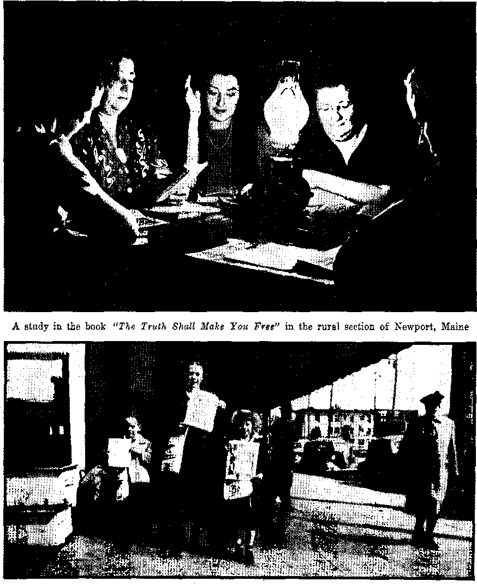

Faithful Women in Concentration Camps
“Make Disciples” in Concentration Camps 9
An Octogenarian Reviews the Universe
Reliable Source of Information
The Universe to Continue Forever
Moore Denounces Regimentation. ■
Ocean Power a Stupendous Asset
Keep Politics Out of the School^
Published every other Wednesday by WATCHTOWER BIBLE AND TRACT SOCIETY, INC, 117 Attains St., Brooklyn 1. N. U. 9. A.
OFFICERS
President N. H. Knorr
Secretary . W. E. Van Amburgh
Editor Clayton J, Woodworth
Five Certs a Copy
$1 a year in the Uni tod Scutes JI.25 to Canada and all other countries
NOTICE TO SUBSCRIBERS
Remittances: For your Own aafiity. remit by portal note df by postal Of express money order or by bank draft. When cotn or currency la lost in the ordinary mails, there is no redress. Remit Lances from countries other than those named below may be made to the Brooklyn office, but only by international postal money order.
Receipt of a new or renewal subscription will be acknowledged only when requested. Notice of Expiration iB sent with the journal one month before subscription expires. Flcase renew promptly to avoid loss of copies. Send change of address direct to us rather than to the post office. Your, request should reach us at tea st three weeks before the date of issue with which it is to take effect. Send your old as well as Ihe new address. Copies will not be forwarded by the post office to your new address unless extra postage is provided by you.
Published also in German, Greek, Portuguese, Spanish and Ukrainian.
OFFICES FOR OTHER COUNTRIES
Australia 7 Beresford Rd,, Strathflcld, N. S. W.
Canada 40 Trwin Ave., Toronto 5, Ontario
England 34 Craven Terrace, London, W. 2
India 167 Love Laue, Bombay 27
Newfoundland P O Box 521. St. John’s
New Zealand 177 Daniell St., Wellington, S. 1
Philippine Islands 1219-B Oroquiela St., Manila
South Africa 623 Boston House, Cape Town
Entered as second-class matter at Brooklyn, K Y., under the Act of March 3, 1879,
In Brief
Hope for the Little Celiacs
♦ The article “Little Maids of New York” on page 15 of Consolation No. 681, issue of October 24, 1945, interested me very, very much. Both Albert and Glenn, my stepsons, are celiac (crteliac) victims. Their mother died when Glenn was born. At the most critical stage, Glenn had an average of thirty bowel movements in a 24-Ji our period. The boys ate nearly twenty bananas daily.
The best doctor that ever entered our home was the Kingdom message. T once restrained their craving for the eating . of dirt and charcoal from wood ashes, but learning that we are of the dust 1 let them satisfy their appetites for these unusual foods. Albert is now past 16 years old and is shaping up like a young t man, and though Glenn is less fortu- ’ natc, their large, bloated bellies have gone down, and they have now been able to get along without bananas for three ■ years. They eat lots of other foods, with little or no ill effects.
The Watchtower and Consolation have brought peace and comfort to our home, and Jehovah God alone knows the hope that their words have given us. We have destroyed our aluminum ware, and are eating lots of onions and tomatoes, as Consolation has advised.
Now I want to thank you, from the bottom of my heart, for being a good physician to our whole family. Both Albert and Glenn were in a hospital in Kansas City for 19 months, and when they were released and came home Glenn, at 31 years of age, weighed only 17j pounds. It is comforting to know there will be no celiacs in the Kingdom. Maybe the boys are outgrowing their ailment, because of a knowledge ; of the truth, and Jehovah’s blessing.
Keep up the good work of preparing preachers of the true gospel, to seek out the “other sheep”.—A grateful fighter for the New World, Kansas. ,
“And in His name shall the nations hope.”—Matthew 12:21, A.S. V.
Volume XXVII Brooklyn, N«Y., Wednesday, January 16, 1946 Number 687
Faithful Women in Concentration Camps
THE first woman, Eve, became selfish and abandoned faith in her Maker. She turned away from the pure worship of God and took up the religion of the Serpent. Into death eternal she went for her faithless course of disobedience. Never will she live in the New World of righteousness. '
However, there have been many women who have not followed in the lawless course of the first woman. In- pleasing contrast with rebellious Eve there have been many faithful women down through the ages who held firm to the pure worship of God. To mention a few: there was Sarah, the wife of faithful Abraham; and Rahab, who through faith delivered her household from destruction; Deborah, the prophetess, who had faith enough to join Barak in the battle against the dictator Sisera; Naomi and Ruth, who because of their faith were greatly blessed by God. And there was Esther, who with implicit trust and faith in Jehovah, took her life in her hand and went in unto the king saying, “If I perish, I perish.” These, and many others, all testified to their faith by their works amid great peril and suffering, thus proving that they were Jehovah’s witnesses..
No less spectacular has been the display of like faith by thousands of women during the last decade while imprisoned in Nazi concentration camps. These Christian women, Jehovah’s witnesses, were also called “Bible Students”. They maintained their integrity, many unto death beneath the Nazi cudgel, and proved thereby that even the “weaker vessels” can resist the demons by putting their full trust in the great Jehovah God.
Ravensbruck
Miss Genevieve de Gaulle, 24-year-old niece of General de Gaulle, was numbered among the prisoners of Ravensbruck. After being freed by the Allied armies she wrote to the branch office of the Watchtower Society in Switzerland, as follows:
Gentlemen:
I am very glad to be able to convey to you my testimony regarding tile Bible Students whom I met in the Ravensbruck [Women’s] camp. Indeed, I have true admiration for them . . .
The first arrests began ten years ago, and the majority of those who had been brought into the camp at that time died from the bad treatment inflicted upon them, or Were executed.
I knew, however, some survivors of that time and other prisoners who had arrived more reeently; all of them showed very great courage and their attitude commanded eventually even the respect of the SS. They could have been immediately freed if they had renounced their faith. But, on the contrary, they did not cease resistance, even succeeding in introducing bodks and tracts into the camp, which writings caused several among them to be hanged . . .
Moreover, in faithfulness to their belief, the majority of them always refused to participate in war industries, for which attitude they suffered maltreatment and even death . ,. [1946 Yearbook of Jehovah’s witnesses, pages 135, 136]
Tn Ravensbruck there were upward of 500 faithful sisters of the Lord Jesus Christ. From their many terrifying expediences we quote the following to show, not only what they endured, but also how they were cared for and preserved by Jehovah for His name’s sake.
On May 15, 193!), we arrived at Ravensbruck, the first ones there. At that time there were only a few of the barracks built. It was in a desert of sand and the sun was shining mercilessly. We dared not drink the water, as it was unfit for drinking, so we had almost nothing to drink. We had to hew stones, carry stones on sloping boards high up to the new buildings, make roads, dig foundations, make canals, lay eables, dig up tree roots with hatchets, shovel sand and do similar hard work. We had to unload bricks from ships, throwing them from hand to hand the whole day. Our hands bled, for we had no rags to bind around them. Everything had been taken from us. The pain was almost unbearable, and on each brick there was blood. Then the Lord altered matters and we were given other work. The prisoners who now took over the work of unloading bricks were given thick gloves to protect their hands, but Jehovah’s witnesses had to do this with bare hands.
Now began the spirit-killing and endless shoveling every day. The women, especially Jehovah’s witnesses, at that time had to do the heavy work of digging because they were building a number of houses for the personnel and leaders and subleaders of the camp. The pitiful thing was that we did not have good tools to work with. Even the elderly ones and those who had been declared unable to work at Liehtenburg Camp were forced to do this work. So you saw old women ' over sixty years and sick women working with young girls. Sometimes they had to work with professional criminals.
The following cruelty is related by one of these dear old ladies who is more than sixty in years.
At first I had to wheel coal about, barefooted. It was terrible. Our feet were abso-lutelj’ broken, torn and bleeding. The authorities thought by this means to make us sign, but we all went in prayer to Jehovah, and see! Help came! We were then sent to a small fir plantation, where we had to plant trees from seven in the morning to six in the evening. To eat we received two bread sandwiches; and to drink, a mug of coffee. During the midday pause we gathered weeds and ate these with our bread, for it was a long day. But at last we were used to being hungry and did • not notice it any more. When we returned to the barracks in the evening we had to attend roll call. This nearly always lasted two hours, and then we were given food which was so sour that it fermented as it came out of the pot.
In August, 1941, my husband and I were baptized in our home at Amsterdam. Two days later we had a meeting, also in our home. There were six of us: the study leader, one of our friends, my two sisters, my husband and myself. Little could we think that this would be our last meeting. Suddenly the doorbell rang and in came six men from the Gestapo, all with their revolvers pointed at us. We were sent to a concentration camp in Germany. There we were appointed for work outside, and in a short time were sent to a near-by farm, where we had to take potatoes from a pit. We had to loosen with a pick the earth covering the pit, which was frozen hard, and had to get the potatoes, most of which were rotten, out of the ice. My hands were often so frozen that I could not piek up the potatoes. We suffered greatly from hunger, too. Once or twice we were able to make a fire and bake potatoes. That was a great feast!
Later we planted young fir trees on the farm. Then things started to grow with which we were able to appease our hunger. We ate pigweed, nettles, pansies, dandelion, cherry leaves, birch leaves, elderberry and other leaves. We had to be very careful, for if the woman supervisor saw us picking anything she beat us.
Our legs began to break out in sores, and mine were especially bad. In June I received information that my husband had died in the men’s eamp at Ravensbruck. Since we were arrested I had had no news at all of him and did not know where he was. A big transport
was to leave for Auschwitz, and one of my sisters was chosen to go with it. On1 July 1, when they departed,*she said to us: “I am going away and will see you no more.” She told the truth. Also our study leader and our friend met their death a few months after arriving at the camp. Of those who were at our last meeting in Amsterdam there were only my one sister and myself remaining. Would we be able to live through?
Food in the camp became worse and worse, and that we all experienced in our bodies. In the beginning of January I was ill again. My stomach and bowels could not take in anything. After a time my mouth began to be inflamed. The mouth and the tongue became swollen thick all over, and this spread even to the face. It was now absolutely impossible for me to eat. It was scurvy,, caused by Jack of vitamins and proper nourishment. Fortunately we just then received a packet from the Danish Red Cross, with rolled oats and biscuits. With much difficulty I was able to get some of this into me. The other brethren also gave me their rolled oats. So I was able to live through the last months before we left Ravensbruck.
Honest and Trustworthy
Jehovah’s witnesses keep the whole law of the Bible, and for that reason they would not steal even from their Nazi tormentors. This became well known among the official element of the concentration camps. For instance, in Ravens-bruck, as reported: .
Some of the sisters did housework for the wardresses, and one day one of the latter lost a wrist watch. “Who could have taken it? Surely Only the Bible Students.” The wardress went to the commandant with her complaint, accusing the Bible Students. The commandant ansiyered: “The Bible Students do not do that sort of thing,” and ordered a search to be made, not among Jehovah’s witnesses, but among the wardresses themselves. One of these had taken the watch!
‘ Because of the integrity and dependability of these Christians they were given duties and responsibilities in these concentration camps that could be entrusted to no others. '
A truck containing food supplies dared not , be entrusted to even the SS to keep watch over, but had to be guarded by Jehovah’s witnesses, „ as they were trustworthy. Jehovah’s witnesses were the only ones allowed to go everywhere without a guard. I myself was with some sisters for six months in the country, about half an hour from the chicken farm, where we looked after 800 young chiek-ens. We were absolutely without any guard.
We, seven sisters, came together to Ravens-bruck on September 9, 1944. We saw women who went diligently to and fro around the SS houses. When we looked more closely we saw the large, violet triangle on the left •breast, for us a badge of recognition. Compared with all the others who went in and out they seemed clean and fresh, and that cheered our hearts. We learnt afterwards that these sisters Jhad been in prison between seven and eight years and that they enjoyed a certain amount of confidence. They possessed a certificate, or pass, and were able to go in and out without guard. If there was work of a con- ' fidential sort, a “Bible Student” was the first to be given the opportunity. In the breadroom, luggage room, commandant’s offices, in the household of the higher SS officers, on the chicken farm, the piggeries, the garden, in the storehouse, everywhere there were Jehovah’s witnesses. ■
They were trusted because they faithfully did that work which was given them, provided such work was not in conflict with the law of Jehovah. But if it was a question of proving their faithfulness to Jehovah it was impossible to corrupt them, and the SS men knew that Jehovah’s witnesses did not abuse their freedom. Otherwise the orders and in- * st ructions applied to all alike. Rationing, foodstuffs, long hours in the cold and rain at roll call, all this was the same for one and all. The difference between political prisoners and Jehovah’s witnesses lay chiefly in the fact that the commandant and his assistants showed that they knew the witnesses were loyal to God and therefore dependable.
December 19, 1939
This was a fateful day for the faithful sisters in Ravensbruek. But we will let the Official Report made to Berlin tell the story. '
On December 19, 1939, at noon, all Jehovah’s witnesses who had work on the inside or outside had to be present. The commandant asked them if they would be willing to sew some small ammunition pockets on soldier’s uniforms, and that those who declined were to stand aside. As one man all 495 sisters stood aside! Full of anger he cried, “All leave for the cell block!” There we had to stay until the evening in 15° to 20° below freezing. Some were without jackets because called from doing work on the inside. At night they put seven or eight in a small single cell where we had to sleep on the naked floor without covering. The next morning the first call was, “Out in the courtyard,” where we had to stay again until night. Each day at noon we received only a half ration of food until December 24. From the 25th on, they put us in a dark cell where we had to stay for three days. Every fourth day at noon we had a small portion of food and in the evening a little soup. This way three weeks passed.
One of these faithful women who lived through that nightmare of the winter of 1939-40 in Ravensbruek, in writing of this three-week period, says,
Then suddenly there rang out from one of the cells the song, “Give Praise to Jehovah,” and this was taken up by cell after cell until the whole of the building was full of song. Later one of the other prisoners said, “In spite of the hunger you were able to sing.” The camp guard opened the door and said, “I thought I should find a house of mourning here, and here is a house of gladness.” Later on he said, “If I were to drive a steam roller over you Bible Students it would not do you any harm.”
When they were taken out after those three weeks of inhuman torture they were all sick and very weak and stank like corpses, yet the very next day they were put to work shoveling snow in temperatures of 28° to 30° below freezing. Continuing, the Berlin Report says:
6
Daily, early and late, during that winter we, having very thin summer suits, had to be outside in the icy cold doing snow shoveling and eleaning up. When they had no work like this, they sent us with spades and shovels into the frozen sand pits and we had to work there in the open. Every sound-minded person would call this insanity. This did not even change when our time of punishment was over. During these cold weeks the food was far too meager, but we, Jehovah’s witnesses, always received much less than the rest of the prisoners. If the other prisoners were short, some of our food was taken, and water was added to ours. During the time from December 1939 until the end of March, 1940, we got as thin as skeletons. But even this torture was not sufficient to make us waver from our decision.
Jehovah Is Faithful
But what upheld these faithful martyrs when others all around them fell beaten to the dust! Surely something mor^ than the meager fodder that found its way into their gaping stomachs. It is written: “Man shall not live by bread alone [neither by woodshavings and potato peelings], but by every word that proceedeth out of the mouth of God.” (Matthew 4:4) True to this promise Jehovah provided those faithful ones with life-sustaining food, spiritual food, to feed upon even within those forbidden camps. It was such spiritual rations that strengthened and upheld those Christians. Of a truth, Jehovah surpasses all others in faithfulness!
Throughout their reports these witnesses tell of the miracles performed by the Lord in this regard. One such letter from a faithful sister reads:
Dear Brethren:
Since I took leave of you I have had many experiences, sorrowful and severe. But just the severest times were also the happiest, for then I could feel so forcefully the strength and help of the Lord. I so often thought of the-words: ‘I can do all things through Christ, who strengthens me.’ This I really experienced again and again.
CONSOLATION
1 -wets put on a transport; it was frightful. We were slid from pne prison to the next, a long file of several hundred men and women. ■Gaped at by onlookers at the stations, yelled at by policemen, and barked at by the dogs. We were given hardly anything to cat. At last we arrived, sweating and starved, at the concentration eamp, and here we had to stand waiting long hours outside in the sun. The giant gateway closed' behind us. We were in a new world where one stands powerless at their mercy.
A number of girls and women immediately had their hair shaven off. What a horrible sight! Now we had to appear naked before the doctor. He asked each one her name and why she was there. Thereupon, frank and open, I answered: “Because I am a witness for Jehovah.” He replied that I would meet many others of the same mind as myself, and pointed to a sister who was busy near by. This made me very glad,
I immediately perceived my great privilege of being used to bring a ray of light to these banned ones. I was often dead-tired from the heavy work and weak from hunger, but when I then related the spiritual food to the sisters, it seemed to fall from me and I received new strength. Here I felt with such force the truth of the words, “My meat is to do the will of him that sent me.” At this time I learned to know a pioneer sister from Holland, who came into the eamp about the same time as I, and we two helped each other in remembering the latest Watchtowers. In December we, about 500 sisters, organized a general convention, the program being after the pattern of Zurich Convention. It lasted three days. .We had one-hour studies, testimony meetings and surprises! And all this in the midst of barbed wire, with the tyrants always around us. Of a truth, the Lord prepared us a table in the midst of our enemies. In the evenings we always had to sing our songs. The march song, “He that is faithful, he that is loyal,” was known and beloved in the camp.
I was appointed to an SS Home for mothers and children in Wiesbaden with 11 other sisters. Here we had to help clean and arrange this new home. Here too the Lord provided us with the spiritual food on several occasions. From Hollandish builders we got the booklets Satisfied, Man's True Guide, a leaflet concerning Brother Rutherford, and an Informant with the yeartext for 1943. What a joy it was for me to do my accustomed and so beloved work once more! The Hollandish pioneer sister translated the literature from the Hollandish and I had the privilege of making copies of this on a machine in the office of an SS-Obersturmfuhrer (about the equivalent of a major) with whom I sometimes had to work. This was a great joy to prepare these lovely surprises for the other sisters, this time again for a Theocratic general convention. My boss had no idea about my “overtime”, naturally, otherwise he would with certainty have ‘‘made me a head smaller” (by execution). As it was, he threatened me time and again, “Der Kopf kommt ranter!” (I’ll have your head chopped off). However, I had many opportunities of, giving him the witness, and bit by bit he became more friendly toward us.
When the Home was opened and the staff and mothers came we had still further opportunities of witnessing to the truth. This always gave us much joy.
And there were other ways Jehovah provided spiritual food for His faithful people in the lions’ den. On different occasions the brethren received the Watchtower magazine inside loaves of bread. Again, when the sisters in Ravensbruck were famished they received a cake from friends in Holland. They often spoke of how good that cake was. In fact, that was the best cake they ever got, and all 500 of them enjoyed it very much; for inside it had a letter of comfort from the Theocratic organization and it came in a time of dire need. This was a perfect example of how Jehovah through His organization nourished His witnesses while in the sulphurous torture pits of suffering. ■
Studies
The commandment, ‘Forsake not the assembling of yourselves together, and the more so as you see the day approaching’ (Hebrews 10:25), was observed throughout these camps as opportunity afforded. These Christians had their secret meeting where they edified and built one another up in the most holy faith.
• They took advantage of even the worst situations to hold a study in the Bible, considering it a provision of the Lord. For instance:
There was an air-raid warning at midday nearly every day at Auschwitz. One day a bomb fell in the railway station. After this attack the central-heating system at the leaders’ quarters, where we worked, was frozen. The brothers had expressed the wish that it would be possible to have a “week-end meeting” with the sisters, and now we received an opportunity from the Lord to hold such a meeting. One ctf the brothers was sent to repair the damage, and during the dinner hour he came to our room and served us with the Word of God. This went on for six consecutive days. The sentry, with his rifle at his feet, sat there too, and listened with interest to the presentation by the brother. About thirty sisters were present. It was a wonderful time for us to once again renew our strength for that which was to come. Everything had to be done secretly; for if the enemy had discovered what we had arranged in connection with the frozen water pipes, the result would have been terrible. To the Lord belongs all praise and thanks.
At Memorial season 1943, we arranged at the same time an “Assembly of Praise” in the camp Ncurohlau near Karlsbad. This began already early in the morning at 5 a.m. with the baptism of a sister from Konigsberg. In the afternoon we studied The Watchtower. We were 20 sisters and 3 interested (political prisoners). At Memorial 1944 we were likewise united with God’s people, and in the same manner at Pentecost of this year. We always asked the Lord that He bestow upon us also some little part of this blessing, and He fulfilled our prayers. *
Memorial Time
Since A.D. 33 faithful Christians, under whatever circumstances they have found themselves, have observed the annual Memorial Feast to the name of Jg-hovah God and His anointed King, Christ Jesus. Even in the concentration camps in Nazidom the enthroned and reigning King has drunk this cup of joy “new” with His followers.
Everyone was told to be in the laundry at 11 p.m. Exactly at 11 p.m. we were assembled, 105 in number. We stood close together in a circle, in the midst a footstool with a white cloth bearing the emblems. A candle lit the room, as electric light might have betrayed us. We felt like the primitive Christians in the catacombs. It was a solemn feast. We expressed anew our fervent vows to our Father to use all our strength for the vindication of His holy name, to stand faithfully for The Theocracy and to willingly present our bodies as living sacrifices acceptable unto God. Completely lifted up above all earthly things, we were entirely oblivious of our surroundings and felt an army of angels encamped around us. The gratitude that filled our hearts can only be expressed to our heavenly Father with the 150th Psalm.
From Bavensbruck came the report of the annual Memorial Supper as celebrated there, in 1945:
It was even possible that sisters in the camp had a part in the preparation of the Memorial for 1945. Like every year, Satan and his demons tried also this time to prevent this feast. But Jehovah, who is more powerful than all the demons, provided a way out. Through the most marvelous way our loving Father led us all in the camp, 163 in number, of which 109 partook of the emblems. Even we in the punishment block feasted in a way we would never have dreamed of. Jehovah heard our fervent prayer which we all, on the evening before, addressed to Him.
Continued to Preach
Jehovah’s witnesses are divinely ordained to ‘preach this gospel of the Kingdom’; that is their commission. It was for this reason that they were thrown into the concentration camps in the first place. Finding themselves in bodily restraint, they were, nevertheless, still Jehovah’s witnesses and they proved this by their continued preaching even in the camps. And the combined
efforts of the Nazis and the Devil failed to stop that work.
Miss de Gaulle stated in her letter, Previously quoted in this article, that Jehovah's witnesses succeeded “in introducing books and tracts into the camp” of Ravensbruck, resulting in the hanging of several Witnesses. Also in the concentration camp of Neuengamme, near Hamburg, a well-organized witnessing campaign was commenced in 1943. Literature was produced and testimony cards -were printed in several languages. But whether they had literature or not they had a tongue, and they used it to tell others about God’s glorious kingdom.
A dramatic example of this oral preaching happened one day wThen the prison authorities caused a brother to be stood up against a wall before the assembled camp. He was told that if he did not stop what they called “propaganda” about God’s kingdom he would be shot. They then handed him a microphone for him to announce to the camp his compliance with their rule. There he was with his back to the wall before a firing squad. The 40,000 prisoners were at attention at that climactic moment when he took the microphone in hand and began to speak. Compromise? Not him! He was one of Jehovah’s witnesses and he used that occasion to witness about the kingdom of heaven. Yes, he was shot down in cold blood, but the report says in conclusion, “In spite of this the brethren carried on with the message, so that many young Russians accepted the truth and symbolized their consecration by baptism.”
' Such dauntless courage shown by these faithful witnesses caused the eyes of even some of the guards to be opened to the truth. Here and there, in the various camps, “Sauls” the persecutors became “Pauls” the persecuted.
One may also recall how, centuries ago, when God’s faithful witness Jeremiah was thrown into a miry dungeon, a eunuch slave by the name of Ebed-melech’gave him aid and comfort. Even so in these modern torture chambers certain of the overseer guards showed a similar good-will spirit toward God’s persecuted witnesses. To such “Ebed-melechs” Jehovah says (at a time when war criminals are paying with their life): “You shall escape with your life, because you have put your trust in me.” —Jeremiah 39:18, Moffatt.
"Make Disciples” in Concentration Camps
Not only some of the guards believed, but also among the political prisoners many men and women of good-will listened to the continual preaching of the gospel, and believed. On one occasion in
Showing some of the Nazi concentration camps
the eamp at Neuengamme Jehovah’s witnesses were commanded to stand forth. A Russian youth took his stand with them in spite of efforts of the block-leader and others to hold him back. Notwithstanding the terrible beating he was given with an iron bar he maintained his stand and thereafter was very active in announcing the Kingdom.
Another report reads:
Twenty-nine of our fellow sisters in a certain branch of activity were assigned to other positions. One sister only remained, and 29 other prisoners, mainly Russian and Ukrainian girls, were placed in her care. The sister who had to superintend these girls was very kind and good, so that after a short time they clung to her as children to their mother. They are all young, untouched, innocent girls, from 16 to 22 years, and one day one of them who speaks German quite well addressed the sister requesting her to tell them which was the true faith, explaining that they were brought up as atheists, but they were sure there must he a God. She further said: “I have to listen so carefully to you, for I have to tell it all again to the girls in our house. We want to believe!’’ And again she said: “It is such a good thing that we girls didn’t have to believe in the church and the czar, as our parents did; otherwise we could not so quickly grasp, the truth now.” All of them, over 100, reflected that if we were here for the sake of our belief, then we must have the true faith.
Another report tells of 300 Russians and Ukrainians accepting the truth in the one camp of Ravensbruck. And there were others too. A’letter from one of these “Jonadabs” (2 Kings 10:15,16) reads:
I was arrested July 4, 1943, because my husband is a Jew. In December I was transported to Ravensbruck, near Berlin. This camp made a great impression upon me. I had to see and experience the great injustice which ruled in the camp. Most of the people were like animals.
In July 1944, one year after my arrest, I came in connection with Jehovah’s witnesses. Previously I had only heard about them. Two months later I came into the truth, and I rejoice greatly therein. I rejoice, too, as I look forward to the futurefor the ways of Jehovah are wonderful. I do not regret one moment spent in the concentration camp, for if I had not shared in this tribulation perhaps I should never have come into the truth. So I have become very rich and have found that which I sought.
Thus we see that “Jonadabs” were born in those dens of misery. Begotten under conditions of difficulty and pain almost impossible for the human mind to grasp, they wandered together in “the valley of death” as companions of Jehovah’s witnesses. They likewise worshiped and served Jehovah.
Baptism in Concentration Camps
The continual preaching and teaching work resulted in a great harvest for the name of Jehovah. Under most dramatic conditions men and women made a consecration to do God’s will and symbolized such by water immersion. Yes, baptized! Not by a meaningless religious sprinkling, but by total submersion in water. Even a water barrel served for this purpose in one camp. And from another report we learn:
Through the active preaching in the camp we found more and more people of good-will of whom many expressed their desire to be immersed. Jehovah blessed our efforts and prayers and so we had the privilege, even in our punishment block, to have two baptism ceremonies with the number of 26 baptized, most of whom were young Russian girls. As a whole, during the eamp time we baptized 70 people of good will.
"Black-out" Transports
All of this Kingdom activity on the part of Jehovah’s witnesses infuriated the Himmler clique. They thought that they could break up this energetic work by scattering the witnesses, but, alas, this was of no avail! “In 1943 the enemy started a great campaign against Jehovah’s witnesses and they were split up and sent to different barracks. Instead of being a hindrance, this was much better for the work of preaching the gospel.”
More terrible, however, than being moved around from one camp to another were the dreaded destruction transports that were known among the prisoners as “black-out” transports. These were used to haul the sick and invalid off to the slaughterhouses and crematories.
Each one who was sick for a while and unable to work had to figure on being assigned to one of those transports. Anyone who had a little strength to work would do something to avoid being put in those transports. The camp officials could not prevent some information concerning these “black-out” transports from leaking put, so it was determined that entire transports were designated for destruction. We did not know directly how they had to die, because everything was secret; the question was of being shot, hanged, or gassed, and that is the way they were murdered.
Auschwitz .
. This camp was located at Oswiecim, Poland, and was known by both names. Berkenau was one compound or division of this annihilation camp. One of those who lived there reports:
After I had been three months in the camp at Kavensbruck, I arrived with a transportation of about 100 other sisters at Auschwitz in June, 1942. The journey had taken two days by train. We were clothed in rags and wooden shoes. The camp was full of lice everywhere, and the plague of fleas was indescribable.
If any were ill they were sent immediately to Berkenau. There it was terrible. If one died, a sick person was laid on the same bed immediately. Everything was full of lice and covered with excreta. The attendance and treatment were carried out by undependable prisoners. This camp was called the “annihilation” camp because of the thousands and thousands who died here,. The Jewish children were thrown alive into the fire. The Jews had to drive their own women and children into the gas chamber. For six weeks they had to dig a huge grave and then often had to throw their women into it, frequently when they were only unconscious. Then everything was burnt. Those who dug the grave knew that after the six weeks it would be their turn. The grave burnt day and night. There were five cremation ovens also in Auschwitz.
But to die of typhus or to “go up the chimney” would be considered a far more merciful death than to be eaten by rats. It is blood-chilling to even think of it, yet some of Jehovah’s witnesses while still alive, being so weak they could not defend themselves, were actually gnawed to death by rats. To make it even worse these faithful Witnesses that were eaten alive by rats were poor, helpless women. They had been weakened by starvation and torture to the point where they could not defend themselves against this most hateful enemy, the rat.
Deliverance at Last!
It is very apparent that none of these faithful Christians could have escaped those vicious deathtraps through their own efforts. Only in the Lord Jehovah’s due time and way were these Catholic-Nazi inquisition chambers finally cracked' open. Then the Lord of hosts with a mighty arm led His people safely out to freedom. The following is a description of just such a miraculous deliverance.
We were then packed into a small coal barge. Being absolutely unseaworthy it was filled with prisoners and sent out to sea. We were twelve days at sea, driven about here and there, and words cannot describe this terrible time. Each morning between 10 and 15 dead bodies were east overboard. I had just recovered from an attack of spotted fever, and had been lying nearly dead for six weeks. I received nb treatment, and now others had to help me to get about. I was compelled to go with this transport. There was another brother and ten sisters aboard the barge, and they did what they could to help me.
On May 15, 1945, we arrived at Seenof, on the Danish island of Moen. Many died here as a result of eating too much to begin with, after the terrible hunger. The Danes found us in an awful condition. We were half-dead with hunger, clothed in rags, covered with lice, and the half of us were ill. Yet Jehovah had preserved us, JI is witnesses, and to Him belongs eternal praise for this protection. We were subsequently taken good care of by the Danish brethren, and now I am able, healthy in spirit and in body, to make the journey home. Whether I shall find my wife and my children there I do not know.
Deliverance from Auschwitz
Of the 250 sisters in this camp only 97 outlived its disease and destruction. One of these tells the story:
Then came January 18, 1945, when the cry went out, “The Russian^ are coming!” The 4,000 women in the camp in groups of 500 were marched off. We sisters marched away at nine o’clock in the evening and kept going the whole night through, with a short rest now and again in the snow. It was a way of ■ horror. To the right and left lay the bodies of men and women who, not being able to march any farther, were either shot or beaten to death. One old sister who was not able to march any farther was ordered by the guards to stay behind. Other sisters who were with her said that if she stayed behind they would do so too, for they knew what would happen if the old sister was left alone. During the argument a sleigh from the farm came along with one of the wardresses. She immediately summed up the situation and, seeing our “Jehovah’s witnesses” badges, said, “You’re not going to do that!” and tpok the sister up into the sleigh with her. We march on. At one o’clock the next day we reached our goal, a small barn. We slept until in the night a terrific crash awakened us. Auschwitz was being bombarded.
In the evening of the next day we came to Loslau. Here we were packed into large barns and passed a terrible night. It was like a house full of demons. Shouting, raging, roaring and fighting. Nobody was safe, and all were packed together, one lying on another. Suddenly a half-grown bull came through the door and there was a terrible to-do. The bull trampled on the people. Everyone was glad when morning dawned. Then, after a few handfuls of snow in our mouths, we came to the railway station, where w’e were to entrain in freight cars. All of a sudden there was a cry, “Bible Students are to detrain,” about 40 sisters. We then waited two days and two nights at the railway station. When the train arrived it was stormed and two or three extra passengers were squeezed into each compartment. There were looks of astonishment and we were asked: “What’s all this? What are those badges you are wearing?” We told them that we were prisoners and Jehovah’s witnesses, and then had a wonderful opportunity to proclaim the Kingdom, and everybody in the compartment took part. Every one of us was filled with joy and thankfulness.
We then came to a place called Gross Rosen. It was terrible, with the narrow space and the roll calls. Suddenly the camp had to be cleared again. We were packed like animals in an open freight car, over 100 persons in one car, but what plagued us most was thirst, it was almost impossible to eat a piece of bread. We lived through all sorts of things on this journey. Men were beaten and shot. And all the time during the journey dead bodies were thrown from the train. On this journey one of the sisters died of diphtheria. Her body was taken out of the train at Weimar. When our train arrived at Buchenwald we were informed that no more would be accepted there, and so we had to continue our journey to Manthausen.
It was after an eight-day tiresome journey, here and there, when we arrived here. We spent the night sitting on our bundles. Next morning we were given some soup, and this tasted wonderfully good, for it was eight days since we had anything warm inside us. After three days the women had to leave the eamp, which was only for men. Horrible stories were related to us there. So we had to march off again, and on the way experienced a heavy air raid. We then entrained in a passenger train and had a second-class compartment. Ten sisters were squeezed in, two of them up on the luggage rack and the others packed themselves together. In this compartment we had a wonderful opportunity to study. The train had to wait for a day in Manthausen, as
■ the line was destroyed there. In Nuremberg ‘ we had three days’ stop and lived through two very heavy air raids. Our train seemed to feel the effects of the bombardment, too, as if it were lifted in the air, but we set our trust in the Lord, knowing that nothing could happen to us without His permission. During this journey another sister died of bloodpoisoning, and we took her remains from the train at Nuremberg, So the journey continued, and during the last three days we ■ had nothing at all to eat. After eleven days, on February 26, we reached Belsen in the evening, but received nothing to eat until the following day at noon. v
Conditiohs in Belsen were bad. There were three or four persons packed into one bed; they lay under the beds and in the passages. Every bit of space was occupied. The dead and sick were lying side by side with the others. Toilet arrangements had ceased to exist. The drainage was stopped up, and people relieved themselves just where they stood. The dead were lying everywhere, sometimes in heaps, and the sight they presented beggars description. For three weeks there was no water, as the waterworks in Hannover had been destroyed. Then 26 of us, sisters, came to the camp at Mittelbau, Harz. Here we had little to eat. Nothing at all for breakfast, not ’ even coffee. For dinner a little kohlrabi soup, -and in the evening a little soup or a bit of bread. During the last three weeks we received a midday meal only. And during the whole of that time we received a piece of bread only twice.
Suddenly the wardresses and 1,000 prisoners, including the Bible Students, were ordered to proceed to Neuengamme. (A sister had heard what they had planned to do with the camp here at Belsen.) But this was easier said than done, as some of the sisters, including myself, were ill. The other sisters were in great trouble. Suddenly, on Api*ii 15, 1945, the camp was occupied by the English troops, two days earlier than the Germans had reckoned. Thus all their decisions were upset. ' ■ They had intended to poison all the prisoners by giving them poisoned bread, and then to blow up the whole of the camp. But for His name’s sake, and for the sake of His people, the Lord caused the aims of the Devi! to eome to napght. All praise to Jehovah God, our gracious God and Father, and to our King Christ Jesus!
Deliverance from Ravensbruck
Jehovah remembered His witnesses in this camp also, and shielded and pro-teeted them before the advancing engines of war.
In the most marvelous wmy did we experience the protection and help of the Lord in those days when by the approach of the Russians Ravensbruck and Furstenburg came within the fighting zone. On the 26th arid 27th of April the camp had to be cleaned out, and so hurried preparations were made- to begin the march under guard in the direction of Malchow. In view of the fact that-the SS did not want to take along the old and sick sisters, all the rest of the sisters refused to leave the camp in spite of the fact that we had in- , formation that the SS intended to blow up the camp. But we trusted in Jehovah because the danger outside the camp , was not less. ' This was also confirmed later on by sisters who wefe on detachments outside. They reported that those prisoners directed to MaL ehow came in the range of the guns and that many died. Also for these sisters the days were very dangerous. All around there were h dead, but these sisters remained untouched. . And we who trusted in the protection of Jehovah and remained with our old and sick , sisters ip the camp—not a hair was touched! The Russians came with such speed that the SS had no time left to blow up the camp. April 28 the camp came into Russian hands without a shot and we could have gone anywhere we desired. But because there was no transportation facilities, especially for the old and sick sisters, we preferred to remain here.
However, there was a burning desire and renewed courage and determination to do * service in the power and strength of Jehovah for The Theocracy and in freedom, and so we - ■looked for some means to move out of the ' camp. Our Father blessed us in our efforts and we found in the forest an old “chaise” without shafts. With confidence in the help of Jehovah, we took this “monstrosity”, made it
■ ■ ' ■' . '.’■■■ ready, decorated it . with branches and roses and placed a banner in front: “Jehovah's-witnesses out of the Concentration Camp.” We were the horses. So it was made possible that by the first transport 42 sisters, nine of Whom were crippled, could travel. To describe all this would lead us too far, but we , are able to say, How wonderful is the lead-t ing and the help of the Lord!
* After we had covered 86 kilometers in three days, we came, on June 14, 1945, to Berlin, where the brothers and sisters had made preparation to take care of us temporarily. One after another the sisters from Ravensbruek reached Berlin.
Still Faithful Witnesses
The faithful martyrs who survived this twentieth-century Inquisition came forth as a people for His name. They were and are Jehovah’s witnesses. So it is not surprising to hear them going everywhere proclaiming the high praises of their God of deliverance, who is the eternal God, above all other gods, the Most High Lord over all the earth!
With confidence and determination to continue as the faithful ministers of the Lord these released ones say:
I was for ten years in the Ravensbruek camp and now I am free. I am thankful to the Father and our Leader Jesus Christ that I can continue to praise His name.
All the sisters long to have part in the great final witness, which Jehovah God in His great love will cause to be given.
We know that the fight is not at an end. In us burns the wish to have a very active part in the service for The Theocracy to the honor of Jehovah’s name. We desire to advance more boldly, knowing that as soldiers of the glorious King we shall advance from victory to victory.
In all the German concentration camps but one desire rules among Jehovah’s witnesses: To remain faithful to the great Theocrat Jehovah of hosts until the final vindication.
Today, standing before the wide-flung camp doors, we declare our readiness to further, carry on the fight for the truth and the vindication of, the name of Jehovah, the great Theocrat, to the final victory. We rejoice in the opportunity of a further work, and cry aloud with the psalmist (20: 7, 8): “Some trust in chariots, and some in horses: but we will remember [praise or magnify] the name of the Loud our God. They are brought down and fallen: but we are risen, and stand upright.” v
Not all of the thousands of faithful Christians that were thrown into the Nazi, concentration camps were heard echoing the above sentiments. A great number of their voices had been silenced in death. Was this because they were unfaithful or less faithful? Not at all. Had not Christ said that some of His followers would be killed? (Matthew24:9) Was not He himself killed because of His faithfulness? Manifestly, then, the issue was not whether Christians could outlive torture and death, but rather, whether they would remain faithful to God in spite of such persecution,
Jehovah’s witnesses in the concentration camps proved to be a ‘people for the issue’. Like the apostle Paul they said, ‘Whether we live or die, we are the Lord’s.’ (Romans 14: 8) Those that died counted it a great privilege to have a share in settling this issue to the Vindication of Jehovah God’s name. Likewise those that passed through the frightful sea of human carnage, many of -whom were women, came out rejoicing.
The most faithful of all, Jehovah, was constantly by the side of His people in that furnace of affliction. When they cried from exhaustion He was there to feed and comfort them. When they fainted and fell He revived and sustained them. To those who were in the throes of death He gave assurance of victory by a glorious resurrection. And finally, In the end He threw the gates wide open and brought forth the survivors. All together they sang: “Thanks be to God, who giveth us the victory.”—1 Corinthians 15: 57, Am. Stan. Ver. ■ :
In this scene, at Highland Park, California, the mother is a deaf-mute publisher of Jehovah’s kingdom. The children have a knowledge of the wonderful Kingdom blessings, and are looking forward to the New World. They are very helpful to their mother in the house-to-house work, as they can hear and then talk to their mother in the sign language. The mother also conducts home studies among the deaf.
SINCE early childhood, over fourscore years ago, there has been burning in me a deep and reverent interest in the millions of stars that for me first beautified every clear night over Minnesota, where my mother' turned my attention to them and their Maker. Every honest student of the universe must face perplexities that challenge his ingenuity to solve. Human powers of comprehension are staggered by the boundlessness of space, the magnitude, velocity and precisely co-ordinated mass-movement of the innumerable celestial orbs, and the eternity of time. Someone well says of Betelgeuse (believed to be 200,000,000 miles in diameter), “Its remoteness is the only thing that saves our skins from starburn” or worse.
How big is the universe?
Did it have a beginning? How and when?
Will it come to an end? How soon?
Challenging, indeed, are such questions. Each one calls for the widest possible research. No evidence bearing upon the truth can be excluded. Physical facts must be acknowledged whether or not they mesh with our preconceptions. What are the facts?
First let us look at some so-called common things.
A jeweled watch, delicate, beautiful, useful, is made for a purpose—to accurately measure time. It did not make itself, but it is evidence per se of the existence of a watchmaker with wisdom, purpose and ability. None but he whose mind is without reason (commonly called a “fool”) would deny it. Gladly we give the watchmaker due credit for his production.
This earth is a physical fact of beauty and utility and, though speeding through space at over a thousand miles a minute, it keeps better time than the finest watch. The watchmaker sets his watch by it. The earth and the stellar heavens did not make themselves, but they are evidences per se of the existence of a Universemaker with intelligence, wisdom, purpose and ability beyond the capacity of the human mind to comprehend. (Isaiah 55: 8, 9) “The heavens declare the glory of God; and the firmament sheweth his handywork,” even though “the fool hath said in his heart, There is no God.”—-Psalms 19: 1^53:1; Romans 1: 21.
Reliable Source of Information
Question 1: How big is the universe? , The answer, unknown now to man, undoubtedly he will knowr in due time.
Question 2: Did the universe have a beginning? How and when?
A very noted ’writer, J. D. Dana, professor of geology and natural history at Yale College, .concerning the Mosaic account of creation says:
The first thing that strikes .the scientific reader is the evidence of Divinity, not merely in the first verse of the record and its successive fiats, but in the whole order of the creation. There is so much that the most recent leadings of science have for the first time explained, that tile idea of inan as its author r becomes utterly incomprehensible.. By proving the [Bible] record true, science proves it divine; for who could have correctly narrated the secrets of eternity but God himself. . . . The Grand Old Book still stands, and this old earth, the more its leaves are turned and pondered, the more will it sustain and illustrate the sacred Word.
The records of the Bible have never been successfully refuted. It stands as a. mighty bulwark against deceit and injustice, and raises the highest standard for truth and justice. Today on the book market it continues to be the “best seller”. .
Tt is impossible for God to lie.’—Hebrews 6: 18.
‘Holy men of God spake as they were moved bv the holy spirit of God,’ — 2 Peter 1:21. ‘
'All scripture given by inspiration of God is profitable for doctrine, for reproof, for correction, for'instruction in righteousness, that the man of God may be perfect, thoroughly furnished unto all good works/—-2 Timothy 3:1.6,17. .
We are., therefore, fully justified in accepting its records as reliable evidence on any matters on which it speaks. What does the Bible have to say regarding the beginning of the universe?
The Bible has comparatively little about the universe, but it has much about the earth, which is an integral part of the universe. Therefore what is found to be true of the earth, the part, will be equally true of the whole.
Sublime simplicity shines in its first sentence: “In the beginning God created the heaven and the earth." That basic truth is amplified again and again throughout the Bible. Note a few ex- • amples: Isaiah 40:21,22,25-28; 42:5; 44: 6-8; 45:11,12. The Maker’s purpose in creating the earth is stated at Isaiah 45:18 and Psalm 115:16: He formed it to be inhabited by intelligent creatures. “Blessed are the meek: for they shall inherit the earth” and “delight themselves in the abundance of peace”.' (Matthew 5:5; Psalm 37:11) The earth, together with the whole universe, is the personal property of Almighty God by right of creation and physical control. (Leviticus 25:23; Job 38-: 4; Proverbs 8:27-29) Positively the record declares that the universe had a beginning, by creation of God Almighty.
When
As to the exact time that God began to create the universe we have no definite information, but there is good Scriptural evidence that He began work on the earth approximately 48,000 years ago, and that man, for whom He made it, was placed in charge approximately 6,000 years ago. That first man’s rebellion against his Maker has brought to all his offspring, even until now, an experience with sorrow, pain and'death.
Apparently this planet is one of the youngest brought forth, though the first to be* inhabited. If it is 48,000 years of age, logically the beginning of creation of the universe must have long preceded it—possibly by thousands of ages. God does not have to hurry, having all eternity to accomplish His purposes.
Creation of the universe was not the beginning of God’s creative work. That work’s very beginning is mentioned at Revelation 3:14: “These things saith the Amen, the faithful and true witness, the beginning of the creation of God.” At Colossians 1:15 we read concerning Christ Jesus “who is the image of the invisible God, the .firstborn of every creature”, who was associated with Jehovah God in all subsequent creative works. —Colossians 1:15-17; Ephesians 3:9; John 1: 3.
That takes us back to when God was alone.
What was back of that is still unknown; There we must leave the record of the past And into the future our vision cast.
Question 3: Will the Universe come to an end? How soon? '
Often the Bible speaks in enigmatic or symbolic language; at other times, in very positive phrase. At Luke 21: 31 is an example of the latter. Certain signs were to precede great world events, and Christ Jesus was telling His disciples how to locate the change or transition of ruler ship or government of this earth and its inhabitants. Rightly one asks, Does the Owner of this earth intend to permit his personal property to be forever the rendezvous of dictators and war lords who compel the common people to plunder and slaughter one another, and to make of the earth one vast cemetery? Let the Scriptures answer: Daniel 2: 44; Psalm 37; Matthew 6:9-13.
According to the prophecy of Christ Jesus, as recorded at Matthew 24 and Luke 21, and the physical facts recorded in the public press of our generation, we are now in the transition period, the time of transfer from the old to the new, the time o£ entering into the last of seven 1,000-year periods, the time of transfer from man’s unsuccessful rule that has prevailed during 6,000 years to the righteous and perfect rule of Almighty God’s King-Son, Christ Jesus, Biblically foretold as due to last for a thousand years: Revelation 20:2-4. That righteous rule 'will completely and permanently eradicate the effects and the causes of the preceding reign of dying men superintended by rebellious invisible demons. (Ephesians 6:12,13) That righteous rule of Almighty God’s appointed “Commander to the peoples”, the principal One, The Prince of Peace, will bring to all obedient inhabitants of earth a fullness of joy, peace, health and eternal life, in paradise restored on earth.—Isaiah 32; 35; 65.
Based upon the following thesis, the answer is, the universe, including the earth, will never come to an end. It is impossible for the human mind to locate a point prior to which there was no time, or a point in the future beyond which there will be no more time. Paradoxically speaking, we are living in the middle of eternity. It is equally impossible for man to grasp the expression that Jehovah God is without beginning or end, yet that illimitable status is ascribed to Him in the Bible, and we cannot disprove it. “I AM THAT I AM” was Jehovah’s answer to Moses.—Exodus 3:14.
A Brief of the Bible
A brief of the entire Bible, outlining God’s dealings with the human race, appears in the second and third chapters of Genesis, depicting paradise lost. Appropriately we couple therewith the last three chapters of Revelation, depicting paradise restored, on this same earth, with Almighty God’s dominion, The Theocratic rule re-established over a perfected human race, with the river and trees of life as the sources of sustenance for all who shall live endlessly. That will be the fulfillment of the God-given promise: “Nevertheless we, according to his [God’s] promise, look for new heavens [invisible, superhuman controlling powers] and a new earth, wherein dwelleth righteousness.”—2 Peter 3:13.
That Theocratic rule, the Kingdom of Almighty God, is the principal-theme of the Bible from Genesis to Revelation. For that rule or dominion Christ Jesus taught His disciples to pray to Almighty God: “Thy kingdom come. Thy will be done in earth, as it is in heaven.”—Matthew 6:10.
The Universe to Continue Forever
What has all this to do with the question, Will the universe come to an end? It is the key to th'e answer. The destiny of the human race is unalterably linked with the destiny of the earth, by the Creator’s decree. Almighty God’s promises recorded ip Holy Writ relate to _ man’s ultimate existence on earth under the re-established sole dominion of its Maker, The Theocratic Government, the kingdom of Almighty God under Christ Jesus the King. What is to become of the earth is therefore of vital interest to every human creature. God, who cannot lie (Hebrews 6:18), has promised that all of Adam’s offspring who choose to submit themselves to the Creator’s righteous rule may have the privilege of living forever on earth. How can God fulfill those promises if He permits the earth to waste away, or to be destroyed? It is recorded, “I have spoken it, I will also bring it to pass; I have purposed it, I will also do it.” (Isaiah 46:11) Again, “The wages of sin is death [annilula-tion]; but the gift of [The] God is eternal life through Jesus Christ our Lord.” —Romans 6: 23.
Since this earth is to ‘abide forever’ . (Ecclesiastes 1: 4) as an integral part of the Creator’s universe, that is strong inferential evidence that the universe will last just as long. Who can say that it is not God’s purpose to people other planets of the universe? There is plenty of time in the eternity ahead.—Isaiah 9: 6, 7; Daniel 2: 44.
Present-day world distress was foretold by Christ Jesus. It has come exactly according, to schedule announced by that Spokesman for the Maker of heaven and earth. Thereby we are unfailingly assured that all other God-given prophecies will be fulfilled with equal exactness.—Matthew 5:18; 24:34.
What practical results will earth’s inhabitants see?
Corroborative Evidence
The establishment of a world-wide Theocratic rule is no small work. It takes time and great preparation. The Creator’s assurance recorded in the Bible is that He will make all things new, (Revelation 21: 5) Faintly we sense the significance of such a transformation when recalling the world of yesterday and comparing that with the world in which the children of yesterday’s children move. The past seventy years have witnessed the bringing forth of more labor-saving machines than all preceding centuries of man’s history put together. Yesterday’s impossibilities are commonplace utilities today. Selfishness now largely controls the machinery of production. Therefore many are thrown out of work. Justice for all demands that the blessings shall be shared equitably by all. According to the Bible, Almighty God is preparing to free man entirely from the curse of having to ‘eat his bread in the sweat of his face’. (Genesis 3:19) Under The Theocratic Government man will be freed from slavery and made master of the forces provided by Almighty God for man’s use.-Micah 4:1-4; Isaiah 65:21-23.
Eternity
Life without end, under the benign smile of the God of eternity! What a prospect! Men of good-will will then have full answer to all of their questions. —Contributed.
WHERE landowners are willing to co-operate, it has been found that live tree snowbreaks, consisting of two or three rows of Norway spruce, red pine, American arbor vitae, Scotch pine, Douglas fir, balsam fir or dogwood, 60 to 100 feet from the edge of the traveled roadway, are more effective in controlling or preventing the drifting of snow than are the standard snow*fences in general use; and they are cheaper, in the long run. Moreover, they take care of the early and late blizzards which the standard snow fences altogether miss, sometimes. In the long run the landowner is benefited, because his highway is open the year round.
The second item, furnished by the Garrett1. Freight Lines, gives details of two trucks and two trailers, each normally loaded,, moving at 35 and 45 miles per hour respectively between the Pacific Coast points of Los Angeles, Salt Lake City, Portland, Oreg., and Pocatello, Idaho, and’apparently conclusively establishing the fact that “the lower, speed was responsible for greater running time, greater driver fatigue, more fuel consumption, more rubber and brake lining wear, and more gears chewed away”. The drivers cheeked their speed every mile of the 1,410 miles traveled, with the following result;
|
35 miles per hour 45 miles per hour |
Hours En Route 54 42 |
Number Times Brakes Applied 1,067 528 |
Number Times Gears Changed 1,868 1,322 |
|
Difference |
12 |
539 |
546 |
|
Saving, at 45. miles per hour 22.2% |
50.5% |
29.2% | |
WHEN Hitler was riding high, wide and handsome, and offering to lick the. world, one of his ukases was that no man might have a shirttail more than 35 inches below his neck. America has not reached the shirttail epoch yet, but is headed that way, and will arrive at that destination as soon as the politicians can get to it. They cheerfully admit that they have all wisdom. All they now need is all power and they will pretty soon show everybody who is who and what is what. Meantime they will continue to draw their salaries, and their breath.
This outburst of cheerfulness is based on a speech of Hon. E. H. Moore, of Oklahoma, in the Senate of the United States, on June 6, 1945, in which he had the courage and the honesty to say that “the OPA is wrong in principle, contrary to our constitution and repugnant to Americanism”. He said that “to prolong regimentation, as exemplified by OPA, is to play with the same fire that consumed both Germany and Italy”; and he had good reasons for saying it. He had just received two telegrams, one from Harper county, in the western part of the state, and one from Tulsa, in the eastern part of the state, and they were only a day apart and were enough to make Senator Moore tear his hair.
The first telegram was from six chambers of commerce in Harper county. It was dated May 29, 1.945, and read as follows:
Harper county is facing an emergency which will restrict procurement of outside labor to harvest one of its largest wheat crops. To relieve the situation the undersigned chambers of commerce were called together by the county organization to meet with the local meat slaughterers and restaurant operators which are this week threatened with closing for want of meat. On a basis of last year’s statistics harvest laborers will increase the county population at least twenty percent.
Slaughtering has been reduced 25 percent on beef and 50 percent on pork. With this unreasonable predicament it will be impossible for the harvest crews to be fed. Harper county has a surplus of medium to good grade beef cattle. Grant us permission to process our local meat and we will need no packing-house products. We face no harvester shortage but these men must be fed, if we save our wheat. We beg your assistance in this crisis.
That telegram probably gave Senator Moore a bad night, but in the morning he had another one just as bad, this time from Tulsa, in the eastern part *01 the state, dated May 30, 1945, which said:
We are confronted here with one of most J serious livestock marketing and food situations in the history of our livestock industry. There exists in this important farming area ‘ largest number of food livestock on the hoof in history. As you are aware the normal marketing period for grass fat cattle is just beginning and will continue until middle of October. Present government restrictions prevent local packers from slaughtering more than very limited number of these cattle. Therefore, they are entirely helpless to care for normal offerings. Our local stockyards are daily refusing acceptance of many hundreds of head cattle and large percentage are being returned to ranches and farms because these cattle are brought into stockyards in small numbers by hundreds of farmers who ’ have no other available market. Many other localities in Southwest are also confronted with this very serious problem. When cattle are fat and there is no market it naturally causes economic loss to producer as well as food loss to public. At large meeting business and professional men at Tulsa Chamber of Commerce today resolution was passed respectfully asking agriculture committee to request you to provide means of immediate relief and to suggest increased killing quotas for local packers.
What Would You Do?
What would you do or what would you have done if you had been in Senator
Moore’s placet You could not telegraph' to the Harper county crowd to go ahead 1 and slaughter enough cattle so that they could feed their harvesters: it might land you behind bars. And you could not telegraph the Tulsa crowd that there were hungry harvesters in Harper county . that would be glad to eat some of the cat
tle for which they have no market. Somebody might think you were trying to evade the law and report you to the OPA and anot her big black wagon would drive up for you.
Senator Moore thinks there is a law of supply and demand. He has something there, but the officials of the OPA know nothing of any such law. They could not understand, for example, that chickens could be sold in Delaware for $1 each and at the same time people that have $9, and an appetite for chicken, are willing and able to pay the $8 difference to get chickens just like them in fancy eating houses not far from New York. Says Senator Moore:
The bungling of OPA personnel is, of course, inexcusable, but let us not forget that OPA was set up for the express purpose of holding prifees in a fixed groove, regardless of result. OPA is not concerned with production. It has no concern with who goes broke. It has no anxiety as to the future of our economy. OPA is charged only with the responsibility of "holding the line”-—the country be d........... '
While OPA is busy planning and executing a sugar shortage, other agencies and departments of government are urging the housewife to can a greater proportion of the fruit and berry crop than ever before. * ~
People have always followed the dictates of relative prices. When prices are low, consumption goes up, and prices rise until consumption goes down. ... No one knows enough to set prices. To set prices on food, for instance, the price fixer must know the acreage that will be planted with a given schedule of prices. He must know what the weather is going to be like, what the supply and demand for the various classifications of food and their Various food forms will be, in the various markets throughout this country and abroad. He must know what the general level of all prices is going to be and what the situation among competing foods will be. In addition, he must have information on such fac- • tors as labor supply, machinery available for producing and processing, transportation, and numerous other pertinent factors. All these must be known well in advance. Such a task is beyond the ability of any man or agency. Price fixers must necessarily be erroneous forecasters.
Moore Denounces Regimentation
Senator Moore is unconvinced that the regimen tors of America have the infinite wisdom that they claim for themselves. Going on with his argument he says:
Today, we have submitted ourselves to compulsion. We have saddled ourselves with ration boards and ration cards, elaborate and unintelligible regulations over every trade, business and enterprise; black markets, gangsterism, and untold inconvenience to the public by expensive, complicated and irresponsible administration.
The man with the C card, new tires, and the money is going out after his food, and he is getting it, notwithstanding inflation or OPA. The result is that a few are eating well, at tremendously inflated prices, but the great majority who are not in position to compete with food on this basis are being poorly fed.
Senator Moore says that some of the men that helped put the OPA into operation have felt the sting of the regimen-tor’S whip, and have confessed that they lost confidence in it when they saw their own businesses disintegrate and fall into the hands of black market gangsters. He says that these men do not want their names used; that they feel that they must protect themselves and their families and for that reason dare not speak up in public. And, says Senator Moore: “This, indeed, is tyranny personified.”
THE invention of printing, one of the most momentous the world has known, was preceded by the invention of wood engraving, also known as xylog-j raphy. The term xylograph is derived i ' from' the Greek words xylon for wood, and grapho, meaning to write. Wood engraving is the art of producing a negative of a picture in relief on wood. The block is then inked and impressed on paper or some other substance, which brings out the picture in proper form and outline, that is, the positive picture itself. -
Wood engraving was developed to a high degree in the late Middle Ages. About the tenth century, and probably before, illuminators of manuscripts used wooden stamps embossed with initials to print the capital letters at the beginning of chapters, etc. These were produced in brilliant colors and often highly ornamented. The first example of wood engraving known, aside from these initial efforts, however, dates from the early part of the fifteenth century. Prints that would now be considered very crude were in evidence in parts of northern Europe, particularly in Germany and the Netherlands. These pictures illustrated Bible characters and events or lives of the numerous saints held in reverence. They were evidently made from wood engravings, printed in an ink that tended to turn pale brown. The outlines were filled in with colored inks or paints, either by hand or with a stencil of some kind. The pictures were an aid to the unlearned, who, even if they could not read the lettering which was made a part of the production, or which appeared underneath, could nevertheless make out from the picture what Bible story it was intended to illustrate.
These sacred and religious pictures were in great demand and their production in mass made wood engraving a familiar art in the fifteenth century.
Books, which had to be produced by making the letters by hand, were still very expensive, but the prints, some of them produced in groups, were more readily obtained by the average person, and were very popular.
The description or title of the picture, cut on the block (in reverse) with the picture, enabled those who could read even a little to derive additional benefit and pleasure from the prints, which, after a while, began to appear in book form. These were called block books, because printed from blocks. (The idea of printing from movable type was only another step in the same direction.) One of the earliest block books was called the “Biblia Pauperum”, or "Poor Bible”. It contains forty pictures, appearing on one side of the page only, in a pale brownish ink.
The drawings evidenced considerable thought and study. They were divided into five sections, with the larger division in the middle containing the chief theme, usually a scene from the Gospels, the life of Christ On the sides are shown scenes from the "Old Testament” which have a bearing on the central theme, perhaps in a typical or prophetic way, while in the remaining panels are shown figures of individuals or characters associated with the story. Texts and Latin verses complete the arrangement.
Another block book, entitled “The Mirror of Human Salvation”, appears to have had its textual matter produced by means of movable blocks, and would thus be the earliest extant example of the art of printing, although it was not followed up and the art was lost, for the time being.
Practically all of the block books were produced in Germany and the Netherlands, those coming from the Netherlands being invariably the more artistic. They were issued in many languages, other countries obtaining them from these sources. • , When printing was invented the block books were replaced by printed volumes. The illustrations, however, continued to be made by the wood-engraving process, constantly improved and often brilliantly colored. The Bible was still the favorite source of the subjects treated, and was itself the first book to be produced in print, an incomparable and beautiful work. Copies may still be seen in the great libraries, ‘such as the Congressional Library at Washington, D. C.
Many of the early editions of the Bible were richly illustrated with numerous drawings of remarkable detail, executed in wood engraving. The famous Cologne Bible, published about 1475, is elaborately illustrated, with 109 designs.
Another popular book was called “The Book of Hours’7, with decorative borders containing Scriptural themes, combined with others that were not at all Scriptural. The wood engravings here show great artistic merit.
As the circulation of the Bible increased, being made accessible to the people by means of the varied illustrations, the lovers of the Bible who had thus far been able to read and enjoy it within the Catholic system, hindered only by sporadic opposition from priest and bishop, were now beginning to feel more determined and better organized opposition. The Bible became a banned book as far as the common people were concerned, but it had endeared itself to so many that the effort of the clergy to cover up their deeds by causing the light to be withheld resulted in dividing the people into two classes, -those who subjected themselves to the domineering clergy and those who held to the Bible. However, this is an article on wood engraving.
The process of wood engraving was not, of course, limited to the production of Biblical and religious literature. Indeed, it is contended by some that the first products of the art were that timewasting device, the playing card, where reproduction of an identical design on the back of each would be likely to suggest some means of stamping them rather than trusting to the variations of hand-drawing. This claim has not, however, been substantiated, and is warmly contested by those who would retain the distinction for that Book the production of which in quantity would likewise make stamping or “printing” by means of blocks desirable. On the whole the Bible appears to hold the honors here as in so many other fields of human progress. First to be produced in codex form, it* was also the first book to be printed from movable type, and, additionally, the first to appear in the form of the block book, produced by the art of wood engraving.
A CONTRIBUTOR favors Consolation with the following digest of “The World’s Richest Mine”, by Ross L. Holman, in The American Mercury. Some new matter has been added to the original story.
In a New World of freedom and prosperity, when the earth is no longer ravaged by wars, pestilences and earthquakes, the land shall yield its increase until the deseits blossom like the rose, and to the utmost frontiers shall reach the borders of paradise. Yet even this does not convey the full extent of the unspeakable blessings of life on earth in the righteous New World now being born. Even when “the sea eoast shall be dwellings and cottages for shepherds, and folds for flocks”, yet then shall those peaceful dwellers by the sea look out upon the great and wide waters and behold literal oceans of riches lapping the sunny shores.
The oceans fill 320,000,000 cubic miles of the earth’s surface. This is by no means a mere vast, watery waste of space. The greediest man that ever lived has never yet been able to get his hands on as much treasures as are eon-
tained in each single cubic mile of ocean ■water. It is reckoned, from the little that men already know about the matter, that in every , cubic mile of ocean water there are at least five billion dollars’ worth of economic minerals alone. There are $25,000,000 worth of pure gold, $60,000,000 worth of iodine, 250,000 tons of bromine, 5,700,000 tons of magnesium; and this is but a sample of the known contents of every cubic mile of ocean water. Consider the value of just these four elements alone, then multiply their total value 320,000,000 times, and you have only begun to realize the unbelievable amount of riches floating around in the deep green oceans.
Plant Foods from the Deep
Not to speak of the illimitable abundance of fish and other valuable forms of life that fill their waters, the oceans provide a variety of plant foods in immeasurable quantites. Here are three examples;
The sea bottom along the Atlantic Coast is covered with carrageen, or “Irish moss”. In Ireland, England and America it is harvested in great abundance. Its high gelatin content provides an ideal base for certain kinds of puddings, jellies and syrups, as well as for , soda fount mixtures. Irish moss is also rich in iodine and sulphur.
Then there is dulse, a marine growth which one has to snatch from rocks while the'tide is out. It is ready to put into the frying pan as soon as picked. Like Irish moss, dulse contains iodine, as well as economically valuable mineral salts.
Kelp is a seaweed that starts from the bottom of the ocean and grows hundreds of feet high. It is harvested by use of enormous scissors that clip it within three feet of the surface without injuring its future growth. After being dried, pulverized and treated with alkali, kelp yields a kind of sugar product, called algin, employed as an emulsifying agent in salad dressing, chocolate milk drink^, ice creams, etc. In other forms kelp is used for making paper and insulation, and is a heavy yielder of iodine and potash. Kelp harvesting is a half-billion-dollar industry.
Seaweed has twice as much potash per ton as barnyard manure. It contains 50 percent more phosphoric acid, plus a lot of mineral salts and some nitrogen. So, when the war cut off shipments of commercial potash to England, British farmers simply substituted seaweed for fertilizer. Now they would hardly substitute fertilizer for seaweed. It brings its harvesters as much as $8 a ton.
s,
Sea Mining
Salt has been mined from the sea since ever man knew how to use it. The oceans are 3.5-percent total salts. According to the American Mercury writer, there is enough salt in the Pacific Ocean alone to cover the United States under a layer of (pure salt one mile thick.
Salt is a necessity to everybody just as it is. Salt also is the cheapest and most plentiful source of sodium and chlorine. These two minerals, besides being useful in various pure and compounded forms, when mixed together produce sodium lye, or caustic soda, used in making rayon, cellulose film, soap, and other products. And then salt yields more than 3,000,000 tons of sodium carbonate each year for use in the manufacture of glass, soap, and paper. Even the by-products of salt manufacture are valuable; there is space to mention only bromine, an essential in manufacturing high octane gas; and chlorine, used in bleaching cotton and in making tetrachloride; and potash; and magnesium chloride; and, should anybody be interested, Epsom salts.
The sea is the biggest supplier of magnesium. Down at Freeport, Texas, 300,000,000 gallons of Gulf water are drawn every day and processed for. the manufacture of magnesium. In one year’s time these 300,000,000 gallons of ocean water drawn up daily yield 400,000,000 pounds of magnesium. At that rate it would take 10 years to run through by this process the first cubic mile of ocean. After that, there would be about 319,999,999 cubic miles to go.
Compared with all the gold floating around in the sea, that pile of gold buried at Fort Knox, Kentucky, would look like an anthill beside Pike’s PeaK But for that matter, sea water contains illimitable quantities of silver, radium, copper, calcium, not to remember salt, -iodine, bromine, chlorine, and a host of equally valuable minerals. The sea’s known species of ' , consolation
■> marine plants contain still more of these same elements, besides any number of additional materials that, can be converted into anything from delicious candies to coal in less than.one hour’s time.
Treasures Atop of Treasures
This is what might be called a mere fish’s-eye view of the riches that fill the oceans. It does not eVen hint at the incalculable treasures lying buried under the floor of the oceans. Already, oil wells have been drilled down through the shallow sea off the shores of Texas and California, and for artesian wells of fresh water off the shores of New Jersey. The Russians have extended their Baku oil wells far into Caspian waters. Oil slicks are frequently discovered a hundred miles from shore. Then, of course, there is every other familiar mineral to be mined from under the ocean floor. In Newfoundland iron is being mined two miles out from the shore by means of a, tunnel running under the sea.
Ocean Power a Stupendous Asset
More fascinating to the imagination than the ocean of riches is that those 320,000,000 cubic miles of wealth are not only there for the taking, but the sea itself can furnish the electric power, represented by the ebb and flow of tides, by which to process them all. Harnessing the power of the oceans is so intriguing a prospect that it may indeed change every aspect of life on earth. As far back as 1928, the Watch Tower Bible and Tract Society published a book, entitled “Government”, which anticipated the use of the power which the Lord put into the waves and tides of the sea. That so tremendous and potential a force will not be permitted to fall into the hands of men of this demonized world, but will be preserved for benefit of the general welfare of His people under The Theocracy in a righteous earth, was indicated by this remarkable book, pages 313, 314, as follows:
“The power of the ocean waves will operate the great machines that have been invented, and others that will be invented, and will produce the electricity that will light all the homes, provide the heat for fuel for all the homes and the power to operate all the necessary machines in the homes and upon the farms. The people will pay a small and reasonable tax merely to cover the necessary cost of operation, but no one will be permitted to reap a selfish profit therefrom because none will be permitted to oppress or hurt in all that holy kingdom. That will be one of the great benefits to the people.—Isaiah 11: 9.”
(From a Catholic’s Viewpoint)
AMERICA’S public school system is its greatest asset. It is as important as the Constitution, and it must be kept so. But there are those who seek to corrupt it with politics, and who would take it over to suit their own selfish ends, by introducing religious instruction as part of the secular educational system. The teaching of religion does not belong in the free American public schools, where the real democratic idea is supposed to function, and where there is supposed to be tolerance for all, regardless of race, color, or creed.
There was a time when public schools opened with a recital of the Lord’s Prayer, and a passage from the- Scriptures was read. But Catholics objected to that, and also to the Lord’s Prayer, because it was not the “Our Father” which we Catholics recite. Finally, there was pressure brought about, and the Scripture portion -was omitted, so as not to offend those who objected to it. And now we hear the cry of the schools’ being godless by the very ones who did more than any other group to drive God out of the schools. And now that same group seeks to have time set aside for the study of and instruction in religion.
Public Schools Should Be Kept Secular
The truth is that the pupils in the public schools already have enough studies to keep them busy, if they are to receive an education to fit them for their careers in later life, without having to be burdened with something that is extraneous. If religion is to be a part of the public school educational system, then there will be not only the “57 varieties”, but a lot more would have as justified, moral and legal rights as any of the <cbig three” who seek to "run the show”. How about the Atheists, Free Thinkers, Jehovah’s witnesses, Moslems, Latter-day Saints, Holy Rollers, Quakers, Salvation Army, and others too numerous to mention, who would have just as much right to claim time and consideration for their ideologies?
Of course, the Roman Catholics would want their faith to be the favored one, but would lean a bit toward the Protestants, just to show how “tolerant” they can be when they “have an ax to grind”. But would they tolerate Jehovah’s witnesses, or any group that places its faith on the Bible rather than on a man-made “infallible” person who assumes to be Vicar of Christ and appointed by Him to rule over all nations of the earth, and God’s sole mouthpiece to speak to men of the world?
Supposing we did include religion in public schools, would the Roman Catholic church tolerate teaching religious history, the Reformation, the life of John Wycliffe, John Huss, Martin Luther, the Spanish and other Inquisitions, the burning at the stake of “heretics and infidels” by the blessed order of the popes? Those are matters of historical importance, as much as our own national history, for the fact that this country was founded by those who fled from religious intolerance and persecution, to live according to their own convictions; and out of all that came the foundations of our public school system of nonsectarian and democratic way of life.
How About Freedom of Speech?
Supposing, for instance, that we did adopt the Roman Catholic parochial system in our public schools: would nonCatholics be taught according to their religious beliefs and allowed to discuss the various religious beliefs, and the causes which brought about the various reformations? Would Jews be given the right to differ with Christians, and to discuss their disbelief in Christ and the New Testament? And would Unitarians, who do not believe in the “trinity”, be allowed to discuss their beliefs? Or would the Free Thinkers and those called Atheists be given due consideration? All we have to do is to look at Spain, Mexico, and other so-called “Catholic countries”, where education is only for the privileged classes. Every time a move has been made to introduce in those lands public schools after our own pattern, such move has been blocked by the Roman Catholic church. Can Catholics deny that fact?
The Holy Bible is the foundation of the Jewish and Christian faiths. The Jews have their Talmud, the Moslems have their Koran, but who ever saw a Bible in a Roman Catholic parochial school? How many Roman Catholic homes have a Bible, even a Douay edition? Those who do have them use them only for records of births, marriages and deaths. How many Catholics do we find, even among the clergy, who have ever read the Bible? Most of the priests I ever knew could not hold a discussion on Bible history with a twelve-year-old child of any of the Protestant groups who make Bible history and study part of their education acquired outside of the secular schools.
Why Burn Valuable Books?
The Roman Catholic Church is opposed to the use of the Bible by the laity. It is a sort of “forbidden book”, and has nothing to do with Catholic education, according to Catholic doctrine. We were shocked when Hitler conducted his book-burning campaign, but we should remember that long before Hitler the Roman Catholic church had a bookburning spree, and Bibles as well as other valuable books and manuscripts.were destroyed. Even in the past recent years the equivalent of book-burning was shown m Spain, where thousands of Bibles Sent to that country were destroyed, and chewed up for paper pulp. Did they reach the people for whom they were intended? And who were they who prevented their distribution? The Roman Catholic high Hierarchy of Spain, who are on the side of that “blessed savior of Spain”, Franco, were the ones responsible, and they see to it that no Bibles get into the hands of the common people, most of whom' cannot read or write, anyway. The same conditions exist in Mexico and South American countries where the Roman Catholic Church “forbids” any missionaries of non-Catholie faiths from entering with any educational plans that would “corrupt” the minds of the people.
That is the kind of public school we would have in the United States if the Roman Catholic Church could have its way. We see politicians Who seek favor from the Catholic vote toadying to the Catholic clergy and in some cases there are public schools which have been aban-donedinow operated as Catholic schools, and in some cases no record has ever been made to show where they were purchased ; they were simply handed over to them by political influence. Just suppose a Protestant parochial school had taken over in the same manner, wouldn’t there have been a time over it? But if anyone had raised a protest against the Catholic taking over, there would have been the usual cries of “bigotry”, “intolerance,” and “discrimination against Catholics”. And we would find some of those generous, liberal-minded Protestants and clergy who would support such claims, just to be tolerant, more of a weak attitude than a firm one on their part. We never hear such men resenting the charge that all Protestants and those outside the Catholic church are heretics and infidels, and have no right to the claim of being Christians.
The Roots of Democracy
The public schools are the root of our democracy. How can there be tolerance when children in parochial schools are educated under such intolerant rot that the Roman Catholic Church is absolutely right, that it is the only true faith, founded by Christ himself (which is a fallacy), that all others are heresies, and those who follow them are heretics and infidels and that outside the Catholic (meaning Roman) church there is no salvation? And what about the teaching that the pope is the greatest person on earth; that he is next to Christ, appointed by Him, and must be obeyed because he speaks for God? How can there be tolerance when children are indoctrinated with such ideas?
But that is what we would get if our public schools ever came under the control of those who seek to introduce their religious ideas in them, and the ambitions of the Roman Catholic Church were fulfilled. The idea of propagation of the faith is to convert the world to Roman Catholicism, not Christianity; the restoration of the Roman Empire, the church that took over after the fall of that empire as the political and religious state that still exists as the political Vatican state ruled by a political potentate vested with more authority than any other ruler on earth. That may go for some countries, but this is the United States of America and our Constitution is the only sacred document by which we are ruled. We are a nation composed of all nationalities and creeds. Let us see that it remains that way. - -
Keep Politics Out of the Schools
Above all, let us keep our public schools uncorrupted by politics of any brand; let us keep them unsectarian. Lest we forget: it was Tom Paine who brought forth the idea of free, nonsectarian public schools; it was he who said, “The world is my country and to do good is my religion.” Bigots maligned him, as they did others who believed in practicing tolerance and the free worship of God according to the dictates of one’s conscience.
Roger Williams fled from Plymouth colony to get away from religious persecution. He set 'up in this, my state, the; first real “lively experiment” of freedom in the worship of God according to one’s conscience. What would he think of all this intolerance? What would these two men, Tom Paine and Roger Williams, say about the persecution of Jehovah’s .witnesses because of their refusal to yield to what they regard as idolatry and not true patriotism? Was that a crime, or a justified cause for persecution? We should not forget that the flag is still “the refuge for scoundrels” and saluting the flag is not a guarantee of one’s patriotism, any more than the sign of the cross, or the fumbling with beads, or the thumping of the breast is of Christianity. 1
To. get back to our public schools.. The, best way to introduce moral instruction is to; put into practice the aims arid pur-,poses of Christianity rather than talk or study about it. Most of us who were educated in public schools know right from wrong, and parochial schools do not show any higher morality than the public schools, as far as those who were -brought up under those teachers are concerned. And as far as their education is concerned, those educated in parochial schools are not better than those of the public schools where all material is furnished free. It is a fact that those who were educated in parochial schools are naturally less tolerant than those educated in the public schools. Our public schools are the cradle of democracy where all are equal. Let us see to it that they are kept that way, regardless of thqse who seek to'corrupt them with their wrong ideas, regardless of who they are.—Contributed, Rhode Island.
BONDAGE OR' FREEDOM - WHICH?
Seeking and heeding demon-instigated doctrines of religion leads into darkness and eventually the fearful condition of grievous bondage.
Seeking and heeding the truth contained in God’s Word removes darkness and leads to understanding, joy, peace and continual freedom. -
If you are one of the many persons seeking such treasured truths, then you have much to gain by obtaining and reading the book entitled ■
"THE TRUTH SHALL MAKE YOU FREE”
This 384-page book contains a Scripture index and numerous pictorial illustrations. It is mailed prepaid upon a contribution of 25c. •
WATCHTOWER 117 Adams St. Brooklyn 1, N.Y.
Please send me a copy of the book "The Truth Shall Make You Free”, for which I enclose a 25c contribution. ,
Name................ Street.........................................................................
City ................................... Postal Unit No......... State ...................................
Lobegott Friedrich Konstantin von Tischendorf (tish'en-dorf), born January 18,1815, died December 7,1874, at Leipzig, was the son of a physician; he is justly considered one of the great scholars of history. He had one great ambition in life, and the Lord blessed that ambition marvelously. He tells what that ambition was in the Introduction to “The New Testament: the Authorised English Version; with introduction, and various readings from the three most celebrated manuscripts of the original Greek text’', published in 1869:
To us the most reverential course appears to be, to accept nothing as the word of God which is not proved to be so_by the evidence of the oldest, and therefore the most certain, witnesses that Ue has put into our hands. With this view, and with this intention, the writer of the present Introduction has occupied himself, for thirty years past, in searching not only the libraries of Europe, but the obscurest convents of the Bast, both in Africa and Asia, for the most ancient manuscripts of the Bible; and has done all in his power to collect the most important of such documents, to arrange them, and to publish them for the benefit both of the present age and of posterity, so as to settle the original text of the sacred writers on the basis of the most careful investigation.
In the year 1840, when he had reached 25 years of age, Tischendorf was a university lecturer of considerable fame; but he never settled down to making money, nor, in fact, to doing anything but the one thing above mentioned. In that year he went to Paris. He eked out a living by working for other students and for publishers, but spent most of his time in the library. In that library was a celebrated palimpsest: a manuscript of the Bible from early in the fifth century had been cleaned off in the twelfth century, and used for the writings of Ephra-em Syrus. What no mortal had been able tp do before, Tischendorf did; for with ■ the aid of chemical reagents he was
JANUARY 16,1946
f
able to fully restore the original text.
The Sinaitic Codex
The great honor which Almighty God reserved for Constantine Tischendorf was the finding of the Sinaitic Codex, the second most valuable manuscript of the Bible in existence. It ranks right up next to the Vatican MS. No. 1209, and is admittedly older and more nearly perfect than the Alexandrine MS., which comes third.
In 18’44 he saved from the flames in the Convent of Saint Catherine on Mount Sinai forty-three leaves of what he at once recognized as one. of the oldest and most valuable manuscripts of the Bible in existence. Monks are careful not to know anything about anything, unless maybe it is the making of -wine or whisky or something of that sort, and so the monks were about to start a bonfire with these leaves, when Tischendorf stopped them, and persuaded them not to burn any more until he could take the entire matter up with the czar of Russia, under whom they were working at the time.
Tischendorf found his way back to Europe and published the forty-three leaves. This greatly enhanced his reputation, and brought him in contact with the czar and, at length, fifteen years later, he was able to return to Sinai and obtain, for the czar, the entire manuscript. He had kept the secret so well as to where he found the first forty-three leaves that nobody in the entire fifteen years had disturbed the remainder of the manuscript.
The book “The Truth Shall Make You Free" summarizes the great event in Tischendorf’s life as follows:
Second to Vatican MS. No. 1209 in rank is another one written in the fourth century, the Sinaitic Manuscript. It was found in the Greek Catholic monastery at Mount Sinai in Arabia; by Count Tischendorf, in 1859, and is now at the British Museum in London since 1933. It is in the Greek, and originally contained the whole Bible, of which the “New Testament” part of it is practically complete, including the Revelation, or Apocalypse, four columns to a page. .
Tischendorfs Own Story
Tischendorf never had the chance, during his lifetime, to study the Vatican MS. 1209, which he had so much wished to do. He was permitted only to give it a hurried examination, not a detailed study. But little by little the Vatican retreated from its absurd position of keeper of the prison, and in 1889-1890 all previous publications thereof were backed up by a photographic facsimile of the whole original manuscript. This was a cause for great rejoicing among all scholars, everywhere.
Of ■ his own great find Tischendorf made this statement; ,
The Sinaitic Codex I was myself so happy as to discover in 1844 and 1859, at the Convent of St. Catherine, on Mount Sinai, in the latter of which years I brought it to Russia to the Emperor Alexander the Second, at whose instance my second journey to the East was undertaken. It is written in four columns to a page, and contains both Old and New Testaments—the latter perfect, without the loss of a single leaf. In addition, it contains the entire Epistle of Barnabas, and a portion of the “Shepherd” of Hermas, two books which down to the beginning of the fourth century were looked upon by many as Scripture. All the considerations which tend to fix the date of manuscripts lead to the conclusion that the Sinaitic Codex belongs to the middle of the fourth' century. Indeed, the evidence is clearer in this ca$e than in that of the Vatican Codex; and it is not improbable (which cannot be the case with the Vatican MS.) that it is one of the fifty copies of the Scriptures which Emperor Constantine in the year 331 directed to be made for Byzantium, under the care of Eusebius of Caesarea. In this case it is a natural inference that it wTas sent from Byzantium to the monks of St. Catherine by the Emperor Justinian, the founder of the convent. . . .
These considerations seem to show that the first place among the three great Manuscripts, both for age and extent, is held by the Sinaitic Codex, the second by the Vatican [Tisehen-dorf erred: Vatican 1209 comes first and Sinaitic second], and the third by the Alexandrine. And this order is completely confirmed by the text they exhibit, which is not merely that which was accepted in the East at the time they were copied; but, having been written by Alexandrine copyists who knew but iittle of Greek, and therefore had no temptation to make alterations, they remain in a high degree faithful to the text which was accepted through a large part of Christendom in the third and second centuries. The proof of this is their agreement with the most ancient translations—namely the so-called Italic, made in the second century in proconsular Africa; the Syriac Gospels of the same date, now transferred from the convents of the Nitrian desert to the British Museum; and the Coptic version of the third century. It is confirmed also by their agreement with the oldest of the Fathers, such as Irenteus, Tertullian, Clement, and Origen. [Tischendorf's enthusiasm for the Sinaitic Codex is quite excusable, in view of the fact that scholars generally agree that even if not entitled to first place, it is unquestionably entitled to the.second place.] ..;
By Eusebius and Jerome (the former of whom died in the year 340) it is stated expressly that in nearly all the trustworthy copies of their time the Gospel of Mark ended with chapter 16, verse 8; and with this, of all existing known Greek manuscripts, only the Vatican and the Sinaitic now agree.
WHILE the serum craze is on, it is interesting to observe that although John D. Rockefeller (at one time accounted the richest man in the world) kept himself alive for years by chiropractic treatments, yet the New York state legislature, with that great wisdom for which it is famous, refused to license
chiropractors in the state of New York
While the serum craze is on, it is of < interest to note that there was an epidemic of infantile paralysis in New York state, with the net result that there remained over 1,000 paralyzed victims, mostly children. Maybe chiropractic could help some of these children. Isn’t it fair to give people a chance to get help where others have failed?
While the serum craze is on, it is interesting to know that at Jackson Heights, Queens, the Miraglia family had been blessed with a wonderful gift, a pair of beautiful boy twins. But, it seems, according to the newspapers, that the children had not been rightly started to get along in this world. What they really needed was serum, and as serum is for sale, why not sell it? O.K. The family doctor gave the twins a serum injection against diphtheria and whooping cough, and they died. Of course, the rotten stuff from which the serum was made could not have been "contaminated”. Who ever heard of a contaminated serum, especially when everybody knows how "pure” all serums are?
A MEMORANDUM from Du Quoin, easy chairs and watch their work being Ill., which accompanied this picture, done for them, without any safety lamps,
states that a single shovelful contains five tons, and the daily output is about 5,000 tons. In other words, this monster shovel could load in a single day all the cars in four 50-car freight trains each car carrying 50,000 pounds of freight. This shovel, as it was operated in Illinois, was occupied in what is called “strip mining”, i.e., the recovery of coal from 20 to 60 feet below the surface of the earth, without danger to the lives of the miners. Indeed, except for . a man to run the shovel, afid a few other men to operate the trains, no
This shovel mines
5,000 tons a day.
men would be needed. The miners that owned the machine could just sit in their or powder, or picks, or small shovels or other equipment being used. Of course, if the machine didn’t belong to the miners, but, by hard luck, belonged to, say, some big bank, then the miners wouldn’t need to worry about any mine accidents thereafter, because they would not be needed. Don’t ask how their children would get anything to eat; that is not the purpose of this essay. The memorandum goes on to explain that the big shovel has been sold to Russia. Probably some of the Illinois miners are really glad at
heart that it was sent there. But maybe not if they send too many like it.
384 pages
FREE DURING 4-MONTH WATCHTOWER CAMPAIGN JANUARY—APRIL
Not a catch commercial offer, but a gracious good-will arrangement by the Watchtower Society
to give a copy of each of the above two illustrated publications as a gift to everyone subscribing for the WATCHTOWER magazine during this special campaign at the regular rate of $1,00 per year.
The WATCHTOWER is an uncensored magazine of 16 pages and is published semimonthly. It is sent by mail prepaid, to' any address anywhere in the United States.
Not political
Not commercial . Not religious -but essential Bible knowledge pertaining to the greatly needed and rapidly approaching Kingdom rule of this earth.
I am enclosing herewith, the sum of $1.00, for which please enter my name for a year’s subscription for The, Watchtower. Also, please mail to address below the two free publications, "The Kingdom Ts at Hand” and The, "Commander to the Peoples”.
Name .........................................................................„ Street........................................................................
City ................................................................... Postal Unit No. ________ State ___________________________________
32 ’ . ’ . CONSOLATION